http://pocketcalculatorshow.com/walkman/sony/
Recognize Diversity
| Advantages | Disadvantages | |
| Direct Manipulation | - visually presents task concepts - allows easy learning - allows errors to be avoided - encourages exploration - affords high subjective satisfaction |
- requires a graphics display and a pointing device |
| Menu Selection | - shortens learning - reduces keystrokes - structures decision making - allows easy support of error handling |
- presents danger of many menus - may slow frequent users - consumes screen space |
| Form Filling | - simplifies data entry - requires modest training - gives convenient assistance |
- consumes screen space |
| Command Language | - is flexible - appeals to 'power' users |
- has poor error handling - requires substantial training and memorization |
| Natural Language | - relieves burden of learning syntax - google smart home? Problems? |
-requires clarification dialogue - is unpredictable |
Direct manipulation -
originally interacting with a computer was direct manipulation at
a low level - moving wires, flipping switches. Direct manipulation
returned in a big way in the 80s (after a lot of basic research
was done in the 60s and 70s) at a higher user level which could
involve using a light pen to touch a location on the screen (70s),
moving a mouse to move a pointer on a screen and clicking the
mouse button to make selections (80s) to more modern alternatives
where the user uses a stylus or their finger to more directly
manipulate the interface itself (2000s).
Definition:
A human-computer interaction style which involves continuous representation of objects of interest, and rapid, reversible, incremental actions and feedback
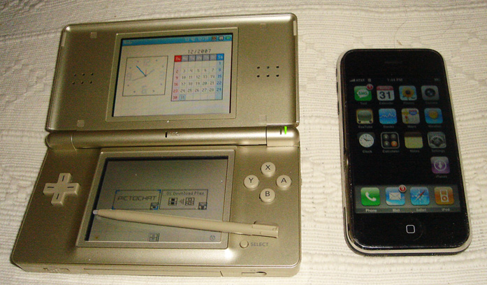
Menu selection is
ubiquitous on computer interfaces today
Form fillin is
also ubiquitous on the web, making it easy for people who need
your data to get it in a form that they can easily process.
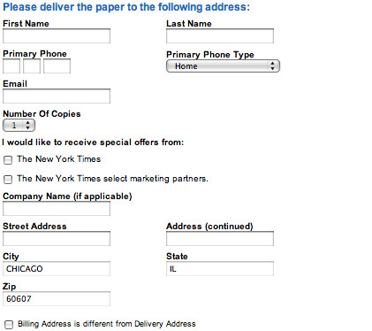
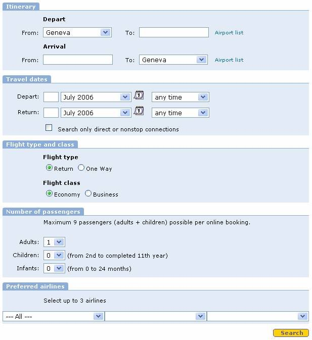
Command language:
Examples:
git clone https://github.com/iDataVisualizationLab/HCI-Spring2021.git
git add -A
git commit -m "Update syllabus"
git push
Limitations:
- has poor error handling
- requires substantial training and memorization
Natural language
is commonly used today when getting information via the phone on
movie times or airline flights or the weather, etc. Services like
1-800-GOOG-411 were useful from 2007-2010 for users with 'dumb'
phones, and Siri, Cortona, Google Glass etc. help smart phone
users, and tools like Alexa have moved that into the home (and
soon car).
Voice can be very successful in areas of
limited/focused vocabulary.
More general natural language recognition is harder.
Talking to your cell phone solves part of the problem of noisy rooms.
2- Golden rules of interface design
Lockheed guidelines for design of power plant control rooms
Getting the User's Attention
Here is
an email from Bill Gates trying to install a piece of Windows
software.
The evolution of the pocket music player is worth
spending a little time on, showing how capabilities and controls
evolve together. Physical controls with a simple mapping to their
function have been evolving into more generic virtual controls .
Transistor Radios - in the mid 1950s a transistor radio
(back with the word 'transistor' sounded really cool) had
basically two controls: a knob to turn the radio on/off and
increase the volume, and a dial to change the station you were
listening to.
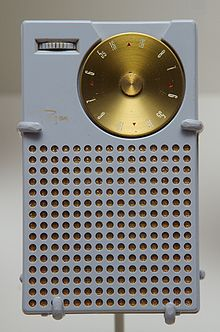
http://en.wikipedia.org/wiki/Transistor_radio
Walkman - 20 years later in the late 1970s the move from
a portable radio, where you could only choose which station you
could listen to, to being able to choose which cassette tape to
listen to was a big leap. The physical controls now needed to let
you eject the cassette, control volume, play, pause, fast-forward,
rewind. If you had an advanced one you could switch to the other
side of the tape without taking it out and putting it back in the
other way, or fast-forward to the beginning of the next song.
http://pocketcalculatorshow.com/walkman/sony/
fast forward another 20 years to the iPod in 2001 and
the basic controls for playing music on an iPod or similar mp3
player are not all that different, but now you are carrying much
more music around with you so there are now more controls to help
you get to the music you want to play.
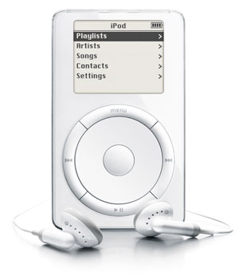
Within another decade the physical controls would almost
completely disappear in favor of a touch / multi-touch interface
and vastly more storage.
and now we are at the point where your music is likely
not even on your person - it is off in the cloud somewhere on an
internet connected device - where you perhaps have access to 'all'
music. Now the issues of finding what you want to listen to, or
might want to listen to, become even more important, especially
when the same music may have been recorded by different artists,
or played at different times by the same artist (i.e. pick the
particular concert you want to hear that song from).
It is also good to think about the kind of feedback
these devices give you about their current state. With the
transistor radio the controls themselves give you feedback on
their state: the volume knob has numbers on it to tell you how
loud is, and the frequency dial has numbers to tell you what you
are tuning into. As you are turning the knobs you get tactile
feedback and would hear what you are tuning into.
On the Walkman the button you press would push in giving
tactile feedback, and often you would hear feedback from the
clicking of the buttons or the whirring of the tape, so you have
immediate feedback about what mode the device is in. To tell where
you are in the cassette you could look through the little window
and see how much tape has already played through.
On an iPod all of the feedback, aside from the audio
itself) is coming to through the LCD screen.
On a modern device all the feedback is coming through a very high resolution, very bright, very colourful screen, which may be on your phone, or on your wrist, or on your head.
Telephones have gone through similar changes
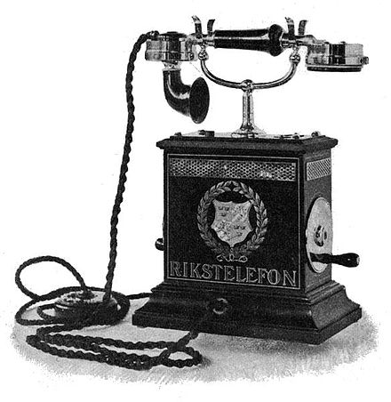
image from Wikipedia
In really early phones which just had a mouthpiece,
earpiece and a crank:
1 - lift the receiver
2 - if no one else is on the line then ring the phone to get the
operator's attention
3 - ask the operator to connect you to the number you want
4 - listen for person to answer
note that this order of operations would continue to be
the practice for collect calls
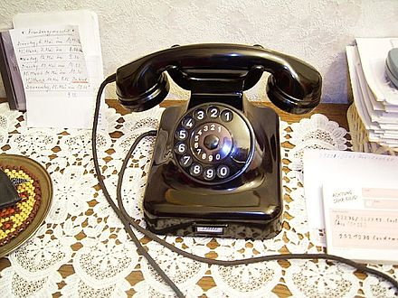 image from Wikipedia
In a classic home phone or public telephone which had
the addition of a way to enter the number you wanted you would:
1 - lift the receiver
2 - listen for the dial tone
3 - find the number in your memory or a notebook
4 - dial the number
5 - listen for person to answer / busy signal / howler / etc
and even the phrase 'dial the number' comes from having
a dial on older phones.
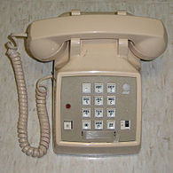 image from Wikipedia
when push button phones were introduced to replace
the dial phones the layout of the buttons was 'fixed' and has
remained the same since - notice that it is not the same layout
for calculators / computer keyboards which are more based on
cash registers. Bell Labs did user studies to come up with the
most appropriate numeric phone layout. The numeric layout on
phones is also better for mapping the alphabet to the numbers
which allowed for handy mnemonics back in the 20th century.
With cell phones you would:
1 - check the number of bars you have
2 - dial the number or select it by scrolling through your
contacts - your main interface was still an alphanumeric keypad
3 - press the call button
4 - listen for person to answer / recording to answer
This initially caused a lot of confusion as the order of
operations was different
With a smart phone you could:
1 - bring up your phone application
2 - find the person in your previous call list / dial the number
directly
etc
1 - bring up your contacts application and find who you
want to talk to
2 - press the dial icon on the contacts page
etc
1 - activate your phones audio interface
2 - ask your phone to call the person by name (which is pretty
similar to the very first telephone interface)
etc
1 - bring up the text conversation that you previously
had with this person and continue it
etc
Another good example is a look back to the olden days of recording
video. Early VHS Video Cassette Recorders (VCR) in the late 1970s
had physical controls and the remote control had only a single
button (pause/play) and was connected by a 20 foot cable. Today
its almost impossible to use a home video device without the
remote control.
The controls are broken up into three zones, each with
different physical controls. The basic controls for turning on the
device, playing/recording a tape, and recording/playing a tape are
pretty easy to use and still somewhat familiar today, though the
commonly used icons had not been invented then. The two big knobs
for changing the TV channel were very common then and pretty easy
to use (remember this was before cable TV existed and there was
just local over the air broadcast on VHF and UHF), and long before
viewing things on a device connected to the internet. Then
there was the clock and the timer, which were as difficult to set
as any digital clock.
http://www.totalrewind.org/vhs.htm
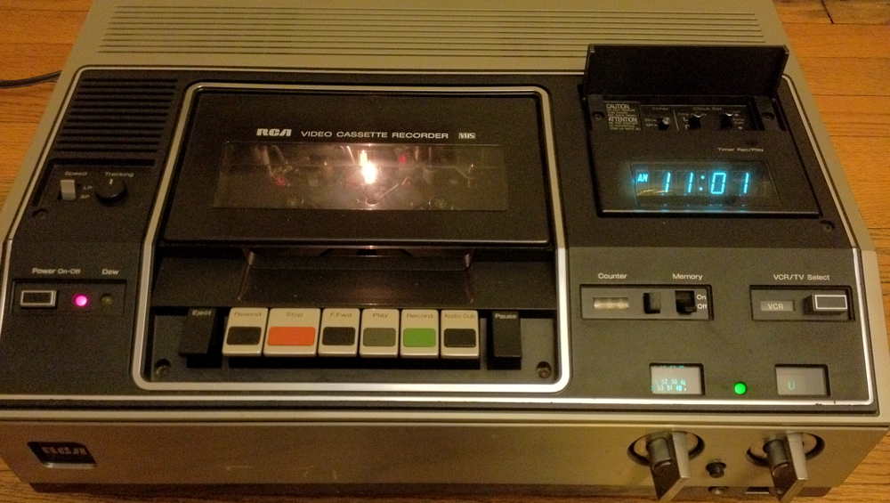
if you grew up
in the days before cell phones and MP3s
Mapquest vs
Google Maps back in 2006 - why did Google win people over?
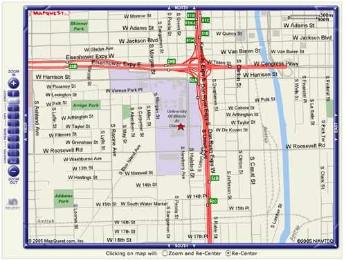
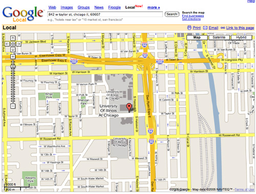
and how do they
look a decade later, how is the interface different, and how has
the way people use them changed?
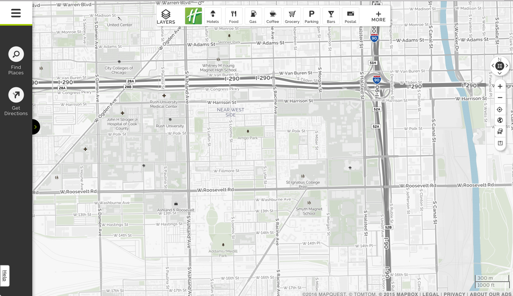
Guidelines for Public Access Terminals
(material from: Things that Make us Smart by Donald Norman, Information Anxiety by Saul Wurman, The Visual Display of Quantitative Information by Edward Tufte, Designing the User Interface 3rd Ed. by Ben Schneiderman, The Psychology of Human-Computer Interaction by Stuart Card and friends, Human-Computer Interaction 2nd Ed by Alan Dix and friends)
Source: https://www.evl.uic.edu/aej/422/week04.html